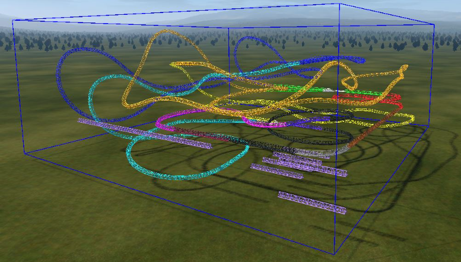
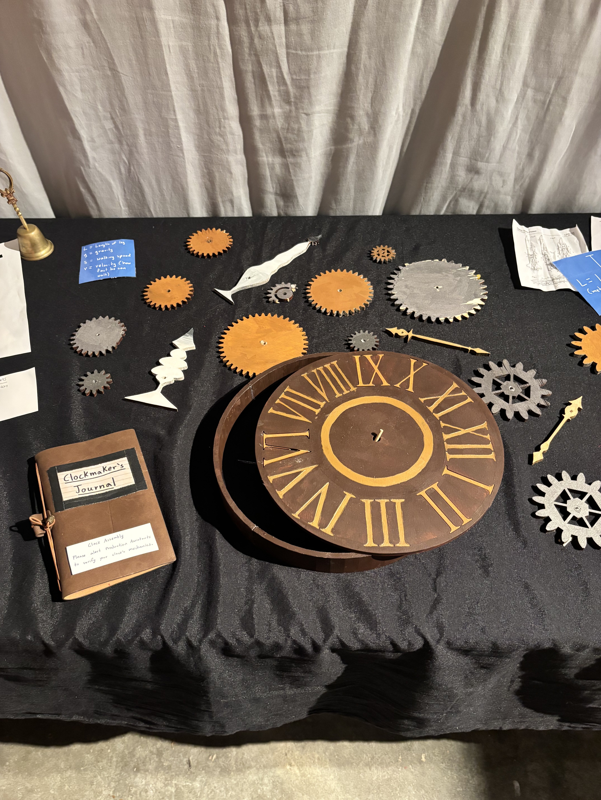
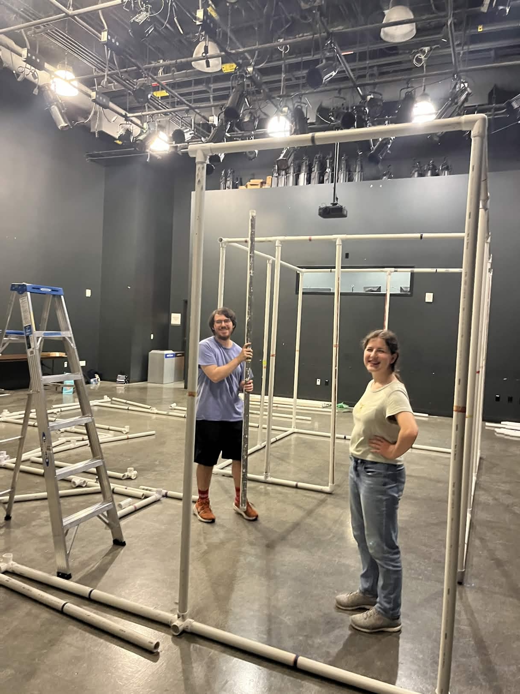
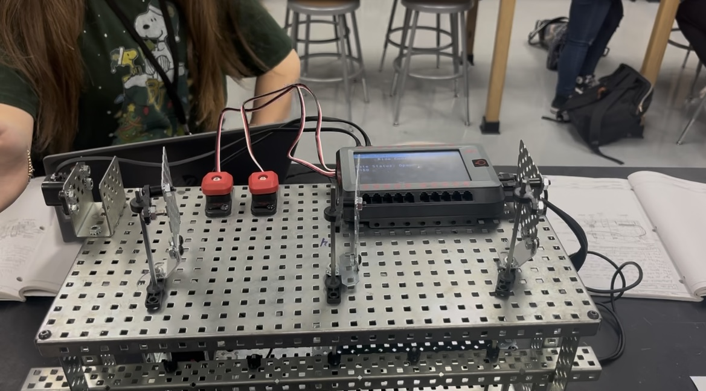
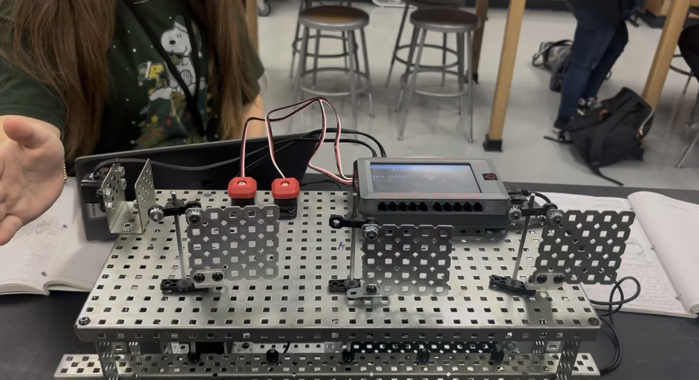
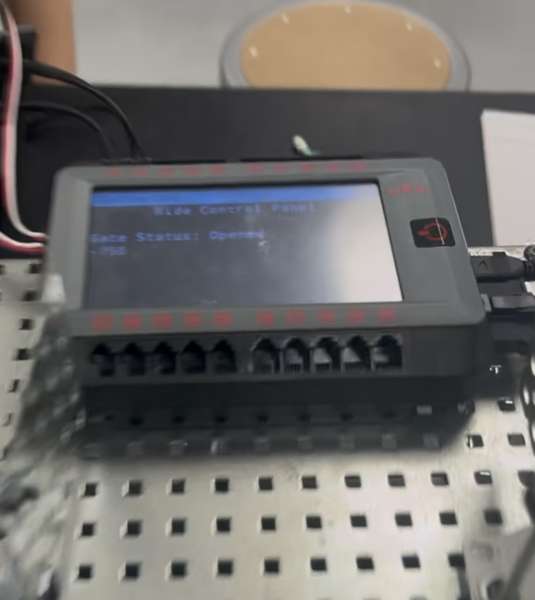
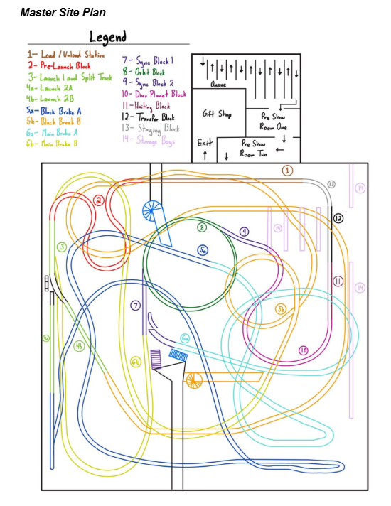
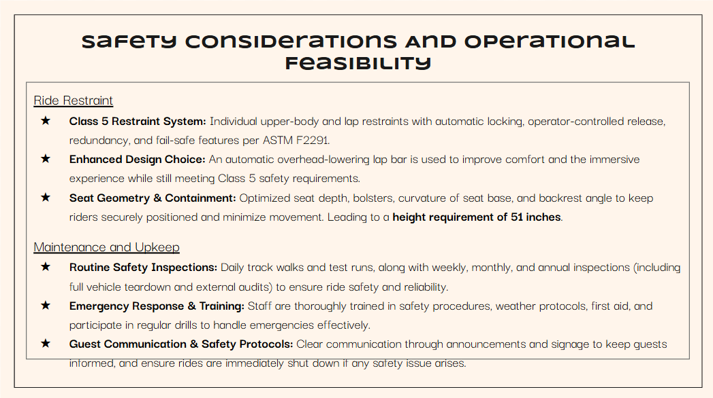
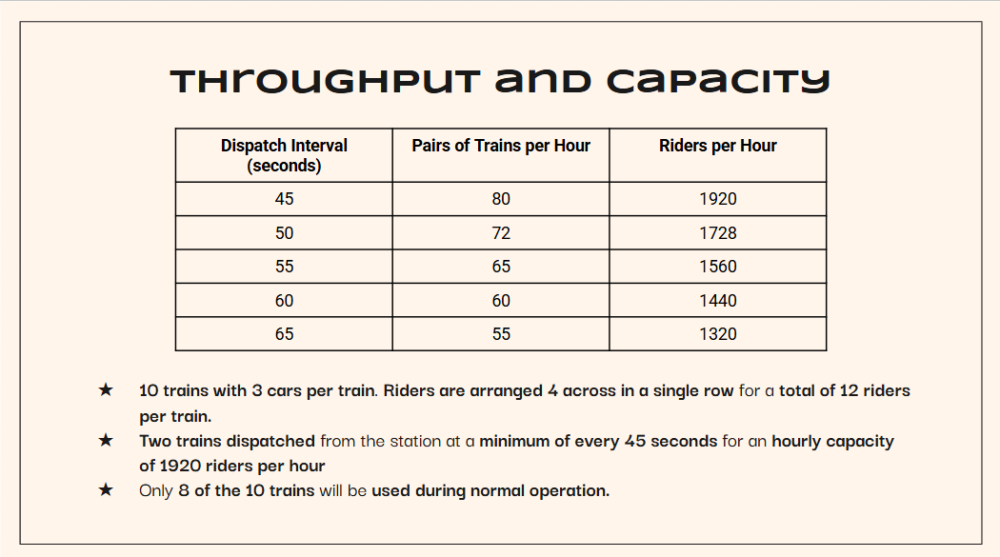

About Me

Hello! I am Ashley Smith, a current Disney College Program participant, computer science major at The University of Texas at Austin, and aspiring themed entertainment professional!
My experience stretches across multiple disciplines, including project management, computer science, park operations, and storytelling utilizing a variety of different mediums! Whether I am managing a team, bringing a themed experience to life, coding a new project, helping a Guest, singing in a choir, reading a book, dancing, or experiencing the new technology of a rollercoaster, I love being able to tell and appreciate stories through many different mediums.
I want to combine my passion for computer science, project management, park operations, and storytelling to be a leader in the themed entertainment industry.
- Project Management
- Problem Solving
- Presentation Development & Delivery
- Team Leadership
- Public Speaking
- Microsoft Suite - Excel, Powerpoint, Word
- Programming - Java, Python, C, C++, C#
- Clear and Concise Communication through Writing
- Time Management
- Managing Team Communication
- Communication
- Conflict Resolution
- Translating Technical Knowledge
- Active Listening
My Projects
-

TxTPED Themed Escape Room - Who Wants To Be A Time Traveler?
Served as Co-Puzzle Development Team Lead and on the Operations and Story teams to bring a themed point-based escape room to life at UT Austin.
View project details -

Ride Gate Controls System
I worked with a team to develop mechanical, electrical, and software systems that worked together to make a functioning gate system for an attraction. Served as Team Lead for the software system.
View project details -

Swamp Thrills Attraction Design Competition
I worked with a team to develop and present a rollercoaster to themed entertainment professionals.
View project details
Project Details
TxTPED Themed Escape Room - Who Wants To Be A Time Traveler?
In Spring 2026, I served as Project Puzzle Development Team Lead as well as on the Operations and Storytelling Teams for Texas Theme Park Engineering and Design’s (TxTPED) themed point-based escape room, “Who Wants To Be A Time Traveler?”. Over the course of 8 weeks, our team of 15-20 people divided between Puzzle, Electrical, Structure, Storytelling, Marketing, and Set Design teams brought this escape room from concept to fruition.
We started out at the end of the Fall semester with two big meetings with the whole team to come up with ideas for what we wanted our project to be. We decided to stray from a traditional escape room in order to give ourselves a challenge and provide a new, unique experience for our Guests. This led to the development of the point system, where each puzzle would earn Guests a certain number of points which could be used to beat the enemy and escape. This point system allowed us to incorporate mini games and repeatable puzzles into our project which would not be present in a traditional escape room.
Over Christmas break, the Storytelling team met over Zoom once a week to formulate a story which could best be presented with our medium. We had already decided in our meetings in the Fall that Guests would be transported back in time in the escape room, and would be trying to defeat an enemy who is preventing them from returning to the present. We also kept in mind that the marketing team would need something to encourage Guests to visit our escape room. This led to us developing the concept of a game show, where Guests are invited to travel back in time by the host, Justin Time. However, when they arrive at the escape room and Justin Time is explaining the rules to them, another figure appears in the preshow and informs them that the last groups to go through this game show have gone missing. The Guests could be in danger, and must earn a certain number of points to defeat Justin Time.
In the second semester, we had 8 weeks to develop and fabricate puzzles as well as the structure and set design of the escape room in order to open in time for Guests. In my role as Puzzle Development Team Lead, I led a team of 6 people utilizing weekly meetings and a Gantt chart to create 22 puzzles for the escape room. We spent our first two meetings developing puzzle ideas, and then the leadership team and I went through the ideas and determined which puzzles would be the most feasible to create as well as work with the plans that the Structure, Storytelling, and Set Design teams had. I then went back to the puzzles team, had them divide into pairs, and had them pick which puzzles they would be fabricating with a deadline of 4 weeks to complete them. The teams primarily worked on the 9 required puzzles to complete the escape room, since they were larger and more challenging. I also worked with the team leads on developing and fabricating some of the smaller puzzles closer to the build week.
As build week arrived, I collaborated with the structure and set design teams to ensure puzzles would be placed in their homes and have time to be tested before the escape room opened. I also used my in-depth knowledge of all the puzzles to develop the Standard Operating Procedure which escape room operators used as they were running the escape room so they knew how to answer common questions, trigger sound queues at the right time, run minigames, and trouble shoot any problems a puzzle may be having.
Links: Standard Operating Procedure
- Problem Solving
- Time Management
- Collaboration Across Different Teams
- Project Management
- Managing Team Communication
-

When the clock puzzle was presented by the members of the puzzles team that created it, it was delivered late, the pieces did not fit together, and the instructions were hard to understand. This led to me last-minute problem solving and creating a new "Journal" with instructions for the clock puzzle as well as widening the holes in the pieces so they could fit onto the clock.
-

I worked with the structure team to put up the structure for the escape room and ensure where our puzzles would fit, escpecially our puzzle which utilized a hole in one of the walls. Pictured here is our Project Lead, David Trevino, and I putting up the structure during build week.
-

Pictured here is a small puzzle I designed and fabricated myself, where Guests had to search the room for pieces of the puzzle and utilize the information to solve a math equation.
Project Details
Project title two
My team and I were given an assignment in our engineering class to create something that would combine mechanical, electrical, and software systems to create a functional, moving machine. We decided to create a ride gate controls system which would automatically open and close on a timer while also having buttons ride operators could use to hold the gates open or close manually.
Links: Ride Gate Controls System Python Code
- Teamwork
- Programming - Python
- System Design
-

Above is a picture of the gates when they are open due to the motion sensor being activated.
-

Above is a picture of the gates when they are closed at the end of the automatic timer. For manual control, the button on the left opens the gates manually, and the button on the right closes them manually.
-

The Ride Control Panel displayed whether the gates were open or closed.
Project Details
Swamp Thrills Attraction Design Competition
In Spring 2026, I participated in the Swamp Thrills Theme Park Attraction Design Competition sponsored by the University of Florida Theme Park Engineering and Design organization. Over the course of 11 weeks, my team and I developed and presented a slideshow and workbook of a rollercoaster designed to meet competition requirements, including needing a 48” or higher height requirement, a story theme of space exploration, and an immersive element which would make Guests feel that they were a part of the story.
Over many weeks in Blue Sky storyboarding and reviewing different coaster designs to decide which would best convey the story we were trying to tell, we developed Celestial Defense: Call from the Cretaceous, an inverted launch coaster which would introduce Guests to the Star People, a group of aliens who have a history of saving planets throughout space. The Guests are invited to take a tour of Polaris, the Star People’s base, but their tour is interrupted when a dinosaur sends a call for help. The Star People must save them before a meteor hits their planet. Guests are then taken on a mission through space to a mirror dimension where they must help save the dinosaurs from extinction.
As a team, we worked to develop a coaster layout and site plan which would prioritize safety and maximize efficiency to provide Guests the best experience possible on our ride!
Links: Project Workbook - Project Slideshow
- Teamwork
- Presentation Development & Delivery
- Translating Technical Knowledge
- Time Management
- Knowledge of Ride Operations
- Knowledge of ASTM and Safety Requirements
-

I developed the master site plan, including block zones, a maintenance bay, evacuation routes, a queue, and an exit with a merchandise store!
-

We followed ASTM guidelines to decide on our restraint class and height requirement to ensure Guests would be safe and happy on our coaster. We also went through how ride operators and engineering services would be trained to perform inspections on the ride to prevent safety hazards from occurring, as well as be informed on potential safety hazards so that they could be prepared to handle them calmly and efficiently in the instance that they occur.
-

We developed a plan to see how the ride would operate on a daily basis, including dispatch intervals and how many trains would be needed to operate at capacity while also providing maintenance the ability to perform annual procedures and basic upkeep on the trains without disrupting operations.
Let's Connect!
- Phone (346) 372-0652
- Email ashleymsmith2526@gmail.com
- LinkedIn linkedin.com/in/ashleysmith25
- GitHub github.com/ashleycodes25